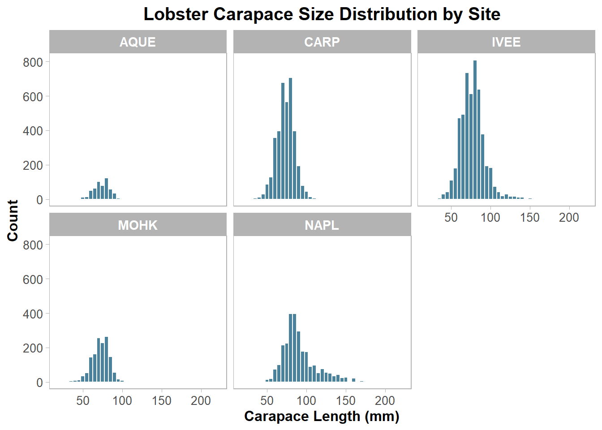
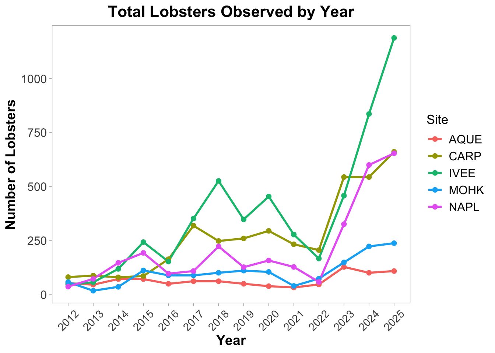
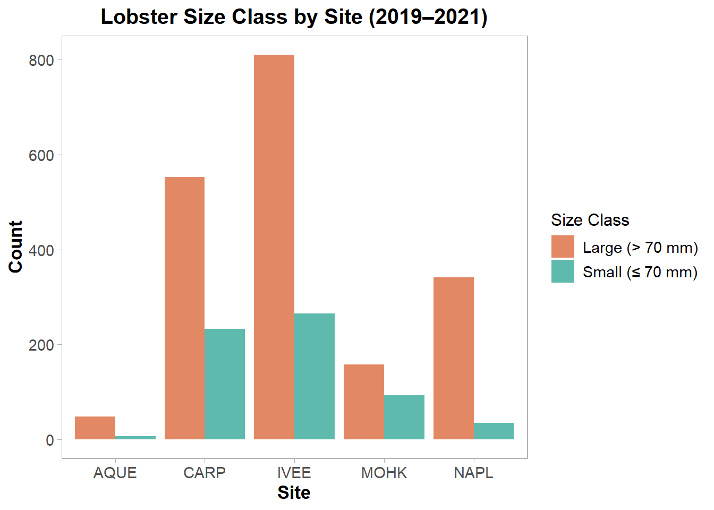

# Load libraries
library(readr)
library(dplyr)
library(ggplot2)
library(tidyr)
library(here)Lobster Report
Data source
The lobster abundance and size data used in this report were obtained from the Santa Barbara Coastal Long-Term Ecological Research (SBC LTER) program, archived on the EDI Data Portal. Data were collected by divers conducting annual and periodic surveys along permanent transects at five reef sites in the Santa Barbara Channel. Lobster counts and carapace lengths (mm) were recorded at each transect and replicate.
-Dataset: Reed, D., and R. Miller. 2023. SBC LTER: Reef: Abundance, size and fishing effort for California Spiny Lobster (Panulirus interruptus), ongoing since 2012. Environmental Data Initiative.
-Downloaded: April 17, 2026
- Direct download link: https://portal.edirepository.org/nis/mapbrowse?packageid=knb-lter-sbc.77.8
Abstract
This report presents an analysis of California spiny lobster (Panulirus interruptus) abundance and size distribution across five reef sites along the Santa Barbara Channel mainland coast, using long-term monitoring data collected by SBC LTER researchers from 2012 to 2025. The owner analysis focuses on lobster abundance and carapace size trends over time and across sites, examining site-level variation and temporal dynamics in this ecologically and commercially important species. The collaborator analysis focuses on trap counts as a proxy for fishing pressure which may explain differences in lobster abundance and size observed in other parts of the dataset.
Data Analysis
# Read in the data
lobster_abundance <- read_csv(here::here("data/Lobster_Abundance_All_Years_20260108.csv"))
lobster_traps <- read_csv(here::here("data/Lobster_Trap_Counts_All_Years_20210519.csv"))Lobster Abundance and Size (All Years)
Data Exploration and Cleaning
The lobster abundance and size dataset contains 14,333 rows and 10 columns, spanning observations from 2012 through 2025 across five reef sites: Arroyo Quemado (AQUE), Carpinteria (CARP), Isla Vista (IVEE), Mohawk (MOHK), and Naples (NAPL). Variables include the year, month, date, site, transect, replicate, carapace length (SIZE_MM), lobster count, and survey area. During initial exploration, the SIZE_MM column was found to use -99999 as a placeholder for missing carapace measurements. These values were recoded as NA prior to analysis to prevent them from distorting any size-based summaries or visualizations. After cleaning, 154 distinct carapace lengths were recorded, ranging from 18 mm to 220 mm.
lobster_abundance <- lobster_abundance %>%
mutate(SIZE_MM = na_if(SIZE_MM, -99999))Data Wrangling
To support targeted analysis, two subsets were created from the cleaned dataset. The first excluded observations from Naples Reef (NAPL) to allow comparison among the four remaining non-MPA and MPA sites independently. The second isolated individuals from Arroyo Quemado (AQUE) with a carapace length of at least 70 mm, capturing the larger size class at that site. In addition, maximum carapace length was computed for each combination of site and sampling month, providing a summary of the largest individuals recorded across the monitoring period. For the size class visualization, lobsters surveyed between 2019 and 2021 were classified as either “small” (carapace ≤ 70 mm) or “large” (carapace > 70 mm), and counts within each size class were summarized by site.
not_napl <- lobster_abundance %>%
filter(SITE != "NAPL")
aque_70mm <- lobster_abundance %>%
filter(SITE == "AQUE" & SIZE_MM >= 70)
max_lobster <- lobster_abundance %>%
group_by(SITE, MONTH) %>%
summarize(MAX_LENGTH = max(SIZE_MM, na.rm = TRUE), .groups = "drop")
lobsters_summarize <- lobster_abundance %>%
group_by(SITE, YEAR) %>%
summarize(COUNT = n(), .groups = "drop")
lobster_size_lrg <- lobster_abundance %>%
filter(YEAR %in% c(2019, 2020, 2021)) %>%
mutate(SIZE_BIN = if_else(SIZE_MM <= 70, true = "small", false = "large")) %>%
group_by(SITE, SIZE_BIN) %>%
summarize(COUNT = n(), .groups = "drop") %>%
drop_na()Lobster Trap Buoy Counts (All Years)
Data Exploration and Cleaning
The lobster trap buoy counts dataset contains trap count observations collected across the same five reef sites from 2012 to 2021. Variables include the year, month, date, site, transect, replicate, and the number of commercial trap floats (TRAPS). During initial exploration, the TRAPS column was found to use -99999 as a placeholder for missing values. These were recoded as NA before any analysis to avoid skewing the results.
lobster_traps <- lobster_traps %>%
mutate(TRAPS = na_if(TRAPS, -99999))Data Wrangling
To support interpretation of fishing pressure, trap counts were summarized by site and year to examine temporal changes across locations. In addition, observations from 2019 to 2021 were classified into “high” and “low” fishing pressure categories using a threshold of 8 traps, following the class exercise. These categories were then summarized by site to compare how frequently higher fishing pressure occurred across the study area.
not_napl <- lobster_traps %>%
filter(SITE != "NAPL")
carp_20_traps <- lobster_traps %>%
filter(SITE == "CARP" & TRAPS > 20)
max_lobster_traps <- lobster_traps %>%
group_by(SITE, MONTH) %>%
summarize(MAX_TRAPS = max(TRAPS, na.rm = TRUE))
lobster_traps_summarize <- lobster_traps %>%
group_by(SITE, YEAR) %>%
summarise(TOTAL_TRAPS = sum(TRAPS, na.rm = TRUE), .groups = "drop")
lobster_traps_fishing_pressure <- lobster_traps %>%
filter(YEAR %in% c(2019, 2020, 2021)) %>%
mutate(FISHING_PRESSURE = if_else(TRAPS >= 8, true = "high", false = "low")) %>%
group_by(SITE, FISHING_PRESSURE) %>%
summarize(COUNT = n()) %>%
drop_na()Data Visualization
Lobster Abundance and Size (All Years)
Figure 1: Size Distribution Patterns
It shows the distribution of carapace lengths at each site across the full monitoring period.
ggplot(data = lobster_abundance, aes(x = SIZE_MM)) +
geom_histogram(binwidth = 5, fill = "#2a6b8a", color = "white", alpha = 0.85) +
facet_wrap(~ SITE, ncol = 3) +
labs(
title = "Lobster Carapace Size Distribution by Site",
x = "Carapace Length (mm)",
y = "Count"
) +
theme_light() +
theme(
plot.title = element_text(size = 15, face = "bold", hjust = 0.5),
axis.title = element_text(size = 12, face = "bold"),
axis.text = element_text(size = 10),
strip.text = element_text(size = 11, face = "bold"),
panel.grid.major = element_blank(),
panel.grid.minor = element_blank()
)
Figure 2: Temporal Trends in Lobster Abundance
It tracks total lobster observations at each site from 2012 to 2025.
lobster_line_plot <- ggplot(data = lobsters_summarize,
aes(x = YEAR, y = COUNT, color = SITE)) +
geom_line(linewidth = 1) +
geom_point(size = 2) +
scale_x_continuous(breaks = seq(2012, 2025, 1)) +
labs(
title = "Total Lobsters Observed by Year",
x = "Year",
y = "Number of Lobsters",
color = "Site"
) +
theme_light() +
theme(
plot.title = element_text(size = 16, face = "bold", hjust = 0.5),
axis.title.x = element_text(size = 14, face = "bold"),
axis.title.y = element_text(size = 14, face = "bold"),
axis.text.x = element_text(size = 11, angle = 45, vjust = 0.5),
axis.text.y = element_text(size = 12),
legend.title = element_text(size = 13),
legend.text = element_text(size = 12),
panel.grid.major = element_blank(),
panel.grid.minor = element_blank()
)
lobster_line_plot
Figure 3: Size Class Composition During 2019–2021
It compares small and large lobster counts across sites during 2019–2021.
ggplot(data = lobster_size_lrg,
aes(x = SITE, y = COUNT, fill = SIZE_BIN)) +
geom_col(position = "dodge", alpha = 0.9) +
scale_fill_manual(values = c("large" = "#e07b54", "small" = "#4db3a4"),
labels = c("Large (> 70 mm)", "Small (≤ 70 mm)")) +
labs(
title = "Lobster Size Class by Site (2019–2021)",
x = "Site",
y = "Count",
fill = "Size Class"
) +
theme_light() +
theme(
plot.title = element_text(size = 15, face = "bold", hjust = 0.5),
axis.title = element_text(size = 13, face = "bold"),
axis.text = element_text(size = 11),
legend.title = element_text(size = 12),
legend.text = element_text(size = 11),
panel.grid.major = element_blank(),
panel.grid.minor = element_blank()
)
Lobster Trap Buoy Counts (All Years)
Figure 4: Distribution of Trap Counts by Year
It shows how lobster trap counts were distributed across years in the monitoring record.
distribution_of_trap_counts_by_year<-ggplot(data = lobster_traps, aes(x = TRAPS)) +
geom_histogram(
bins = 30,
fill = "steelblue",
color = "white"
) +
facet_wrap(~ YEAR, ncol = 4) +
labs(
title = "Distribution of Lobster Trap Counts by Year",
x = "Number of Traps",
y = "Frequency (Observation Counts)"
) +
scale_x_continuous(
breaks = seq(0, 40, by = 10)
) +
theme_light() +
theme(
plot.title = element_text(size = 14, face = "bold"),
axis.title = element_text(size = 10),
axis.text = element_text(size = 9),
strip.text = element_text(size = 10, face = "bold"),
panel.grid.minor = element_blank()
)
distribution_of_trap_counts_by_year
Figure 5: Temporal Trends in Trap Counts
It tracks total lobster trap counts at each site across the study period.
lobster_traps_by_site_year<-ggplot(data = lobster_traps_summarize,
aes(x = YEAR, y = TOTAL_TRAPS, color = SITE)) +
geom_line() +
geom_point() +
labs(
title = "Total Lobster Trap Counts by Site Over Time",
x = "Year",
y = "Total Trap Counts",
color = "Site"
) +
theme_light() +
guides(color = guide_legend(nrow = 2, byrow = TRUE)) +
theme(
plot.title = element_text(hjust = 0.5, face = "bold", size = 12),
legend.position = "bottom",
legend.text = element_text(size = 9),
legend.title = element_text(size = 10)
)
lobster_traps_by_site_year
Figure 6: Fishing Pressure Categories During 2019–2021
It compares how often high and low fishing pressure occurred at each site from 2019 to 2021.
trap_pressure_plot <- ggplot(
data = lobster_traps_fishing_pressure,
aes(x = SITE, y = COUNT, fill = FISHING_PRESSURE)
) +
geom_col(position = "dodge") +
coord_flip() +
labs(
title = "Fishing Pressure by Site (2019–2021)",
x = "Site",
y = "Count",
fill = "Fishing Pressure"
) +
theme_light() +
theme(
plot.title = element_text(hjust = 0.5, face = "bold"),
axis.title.y = element_text(face = "bold"),
axis.title.x = element_text(face = "bold"),
text = element_text(size = 12)
)
trap_pressure_plot
Discussion
Across both the lobster abundance/size data (Figures 1–3) and the fishing pressure data (Figures 4–6), clear spatial and temporal patterns emerge that suggest fishing pressure plays an important role in shaping lobster populations in the Santa Barbara Channel.
From the abundance and size analysis, lobster carapace lengths (Figure 1) show generally right-skewed distributions, with most individuals clustered in a moderate size range (approximately 70–100 mm), but with some larger individuals present at certain sites. In particular, sites such as NAPL and IVEE show a wider spread toward larger sizes compared to other locations, indicating that lobsters at these sites may be able to grow larger. Temporal trends in abundance (Figure 2) indicate that lobster counts fluctuate across years and vary substantially by site, with sites such as CARP and GOLB often showing higher total counts compared to others, suggesting spatial differences in population density. Additionally, the comparison of small versus large lobsters (Figure 3) demonstrates differences in size structure across sites, where some sites are dominated by smaller individuals while others contain a higher proportion of larger lobsters.
The fishing pressure analysis provides important context for interpreting these biological patterns. The distribution of trap counts by year (Figure 4) shows that most observations involve relatively low numbers of traps, but occasional spikes indicate periods of increased fishing activity. When summarized over time (Figure 5), sites such as CARP and GOLB consistently exhibit higher total trap counts than other locations, indicating that fishing effort is concentrated at specific sites rather than evenly distributed. Finally, the classification of fishing pressure into “high” and “low” categories (Figure 6) shows that CARP and GOLB experience a higher frequency of high fishing pressure, whereas sites such as IVEE and NAPL show fewer high-pressure observations, consistent with reduced fishing activity at those locations.
When these results are considered together, a clear relationship emerges between fishing pressure and lobster population structure. Sites with consistently higher fishing pressure (CARP and GOLB; Figures 5 and 6) correspond to sites where the proportion of larger lobsters is lower (Figure 3), suggesting that fishing activity may be removing larger individuals from the population. In contrast, sites with lower fishing pressure, including Marine Protected Areas (IVEE and NAPL; Figures 5 and 6), show evidence of larger individuals in Figure 1, indicating that reduced fishing allows lobsters to grow to larger sizes. Additionally, although sites such as CARP may show higher total abundance in Figure 2, this may reflect high recruitment or turnover rather than the presence of large, mature individuals.
Overall, this analysis suggests that fishing pressure is unevenly distributed across sites and is strongly associated with differences in both lobster size and abundance. By directly comparing fishing effort (Figures 4–6) with biological patterns (Figures 1–3), it becomes evident that higher fishing pressure is linked to fewer large lobsters and altered population structure, while lower fishing pressure—particularly in MPAs—supports larger individuals and potentially more stable populations. These findings highlight the importance of managing fishing effort and demonstrate the ecological value of Marine Protected Areas in maintaining healthy kelp forest ecosystems.